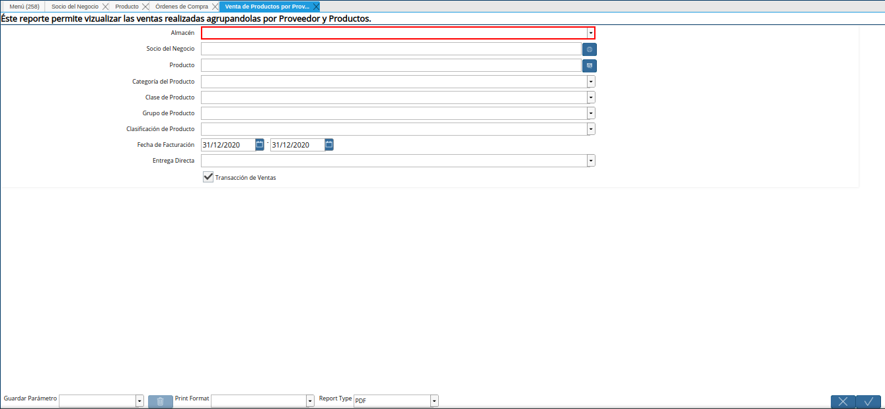
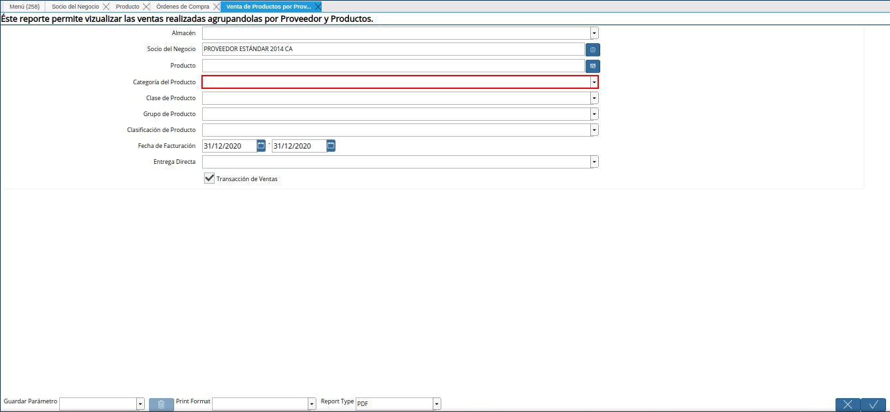

Venta de Productos por Proveedor¶
Seleccione en el menú de ADempiere, la carpeta “Gestión de Ventas”, luego seleccione la carpeta “Facturas de Ventas”, por último seleccione la carpeta “Consulta de Facturas”. Finalmente, seleccione el reporte “Venta de Productos por Proveedor”.
Imagen 1. Menú de ADempiere

Podrá visualizar la ventana del reporte “Venta de Productos por Proveedor”, con diferentes campos que permiten filtrar la búsqueda de información en base a lo requero por el usuario.
Imagen 2. Ventana del Reporte Venta de Productos por Proveedor

Seleccione en el campo “Almacén”, el almacén por el cual requiere filtrar la búsqueda de información.

Imagen 3. Campo Almacén
Seleccione en el campo “Socio del Negocio”, el socio del negocio por el cual requiere filtrar la búsqueda de información.
Imagen 4. Campo Socio del Negocio

Seleccione en el campo “Producto”, el producto por el cual requiere filtrar la búsqueda de información.
Imagen 5. Campo Producto

Seleccione en el campo “Categoría del Producto”, la categoría del producto por el cual requiere filtrar la búsqueda de información.

Imagen 6. Campo Categoría del Producto
Seleccione en el campo “Clase de Producto”, la clase de producto por el cual requiere filtrar la búsqueda de información.
Imagen 7. Campo Clase de Producto

Seleccione en el campo “Grupo de Producto”, el grupo de producto por el cual requiere filtrar la búsqueda de información.
Imagen 8. Campo Grupo de Producto

Seleccione en el campo “Clasificación de Producto”, la clasificación de producto por el cual requiere filtrar la búsqueda de información.
Imagen 9. Campo Clasificación de Producto

Seleccione en el campo “Fecha de Facturación”, el rango de fecha por el cual requiere filtrar la búsqueda de información.
Imagen 10. Campo Fecha de Facturación

Indique en el campo “Entrega Directa”, si requiere filtrar la búsqueda de información por entrega directa.
Imagen 11. Campo Entrega Directa

El check “Transacciones de Venta”, permite filtrar la búsqueda de información por transacciones de venta.
Imagen 12. Check Transacciones de Venta

Seleccione la opción “OK”, para generar el reporte en base a lo seleccionado anteriormente.
Imagen 13. Opción OK

Podrá vizualizar de la siguiente manera el reporte “Venta de Productos por Proveedor”.
Imagen 14. Reporte Venta de Productos por Proveedor